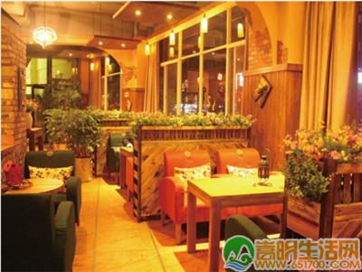
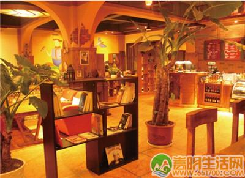
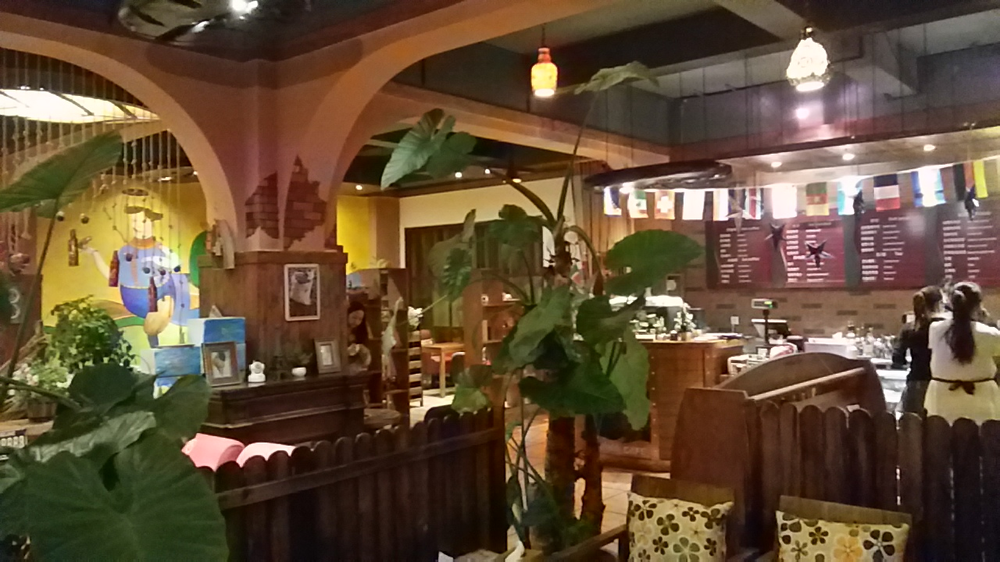
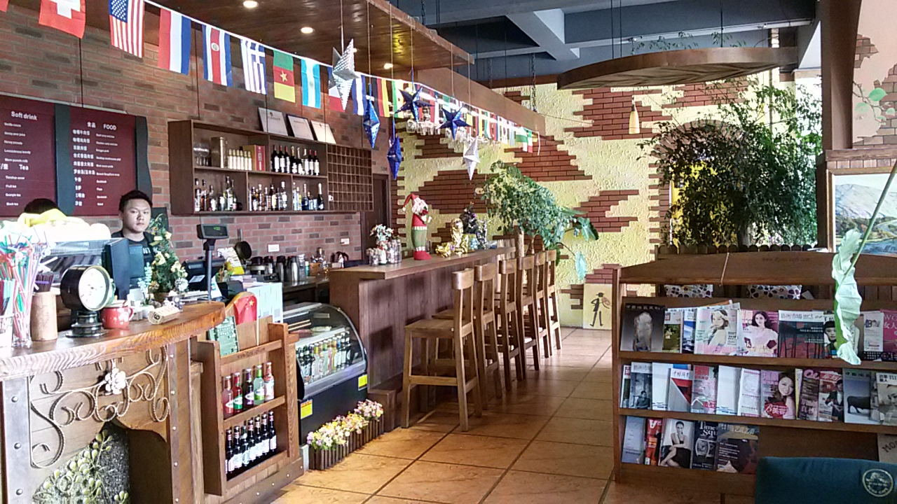

加盟咖啡馆管理与服务您的当前位置:首页>罗纳动态>加盟咖啡馆管理与服务
-

想要开家有情调的咖啡店，不是为了喝咖啡|咖啡加盟
2016-11-08
之前看过一个电影叫做‘第36个故事’讲述的是一个发生于台北咖啡店内35个“以物易物”的交换游戏，继而发展出引人入胜的...
-

前有狼后有虎，传统咖啡加盟业如何绝处重生？
2016-11-08
做为一名咖啡加盟人，我们很清楚我们所处的行业面临着什么，接下来面临着什么。咖啡市场的规模在不断扩大，而部分咖啡加盟店...
-

咖啡、管理，咖啡馆加盟经营的最大问题竟然是它
2016-11-08
谈到各自咖啡馆经营的战场战事，经验和教训颇多，很多人不约而同地将核心问题指向了经营管理上:定规矩、抓执行、管人事、做...
-

判断一家咖啡加盟店是否值得去的六个基本要素
2016-11-08
闭上眼睛，听着打发奶泡的嗤嗤声，咖啡萃取的声音，友人们的欢笑声，还有空气里迷漫着新鲜烘焙的咖啡香，嘴角便不自觉地上扬...